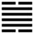

Trạch Phong Đại Quá (大過 dà guò)
Tự quái truyện giảng rất mù mờ, “Di là nuôi, không nuôi thì không thể động (bất dưỡng tức bất động) (?) cho nên sau quẻ Di đến quẻ Đại quá (lớn quá) “Phan Bội Châu Giảng: “Có nuôi rồi sau mới có việc lớn quá”
Chúng tôi nghĩ có thể Giảng: Có bồi dưỡng tài đức thì sau mới làm được việc lớn quá (rất lớn), phi thường.
Chữ “đại quá” có hai cách hiểu: Phần dương trong quẻ tới 4 (phần âm chỉ có hai) mà dương có nghĩa là lớn (âm là nhỏ); vậy đại quá có nghĩa là phần dương nhiều quá; - nghĩa nữa là (đạo đức công nghiệp) lớn quá.
*
Thoán từ:
大過: 棟撓, 利有攸往, 亨．
Đại quá: đống nạo, lợi hữu du vãng, hanh.
Dịch: (Phần dương ) nhiều quá (phần âm ít quá) như cái cột yếu, cong xuống (chống không nổi). Trên di thì lợi, được hanh thông.
Giảng: Nhìn hình của quẻ, bốn hào dương ở giữa, 2 hào âm hai đầu, như cây cột, khúc giữa lớn quá, ngọn và chân nhỏ quá, chống không nổi, phải cong đi.
Tuy vậy, hai hào dương 2 và 5 đều đắc trung, thế là cương mà vẫn trung; lại thêm quẻ Tốn ở dưới có nghĩa là thuận, quẻ Đoài ở trên có nghĩa là hòa, vui, thế là hòa thuận, vui vẻ làm việc, cho nên bảo là tiến đi (hành động) thì được hanh thông.
Đại tượng truyện bàn rộng: Đoài là chằm ở trên, Tốn là cây ở dưới, có nghĩa nước lớn quá, ngập cây. Người quân tử trong quẻ này phải có đức độ, hành vi hơn người, cứ việc gì hợp đạo thì làm, dù một mình đứng riêng, trái với thiên hạ, cũng không sợ (độc lập bất cụ); nếu là việc không hợp đạo thì không thèm làm, dù phải trốn đời, cũng không buồn (độn thế vô muộn).
Ý nghĩa các hào:
1.
初六: 藉用白茅, 无咎．
Sơ lục: Tạ dụng bạch mao, vô cữu.
Dịch: Hào 1, âm: Lót (vật gì) bằng cây cỏ mao trắng, không có lỗi.
Theo Hệ tự thượng truyện Chương VIII, Khổng tử bàn về quẻ này: “Nếu đặt vật gì xuống đất cũng được rồi mà lại còn dùng cỏ mao trắng để lót thì còn sợ gì đổ bể nữa? Như vậy là rất cẩn thận”.
2.
九二: 枯楊生稊, 老夫得其女妻, 无不利．
Cửu nhị: Khô dương sinh đề, lão phu đắc kì nữ thê, vô bất lợi.
Dịch: Hào 2, dương : cây dương khô đâm rễ mới, đàn ông già cưới được vợ trẻ, không gì là không lợi.
Giảng: Dương cương mà ở vị âm (hào 2), như vậy là cương mà có chút nhu, lại đắc trung. Nó thân cận với hào 1 âm, thế là cương nhu tương tế, bớt cứng đi, như cây khô mà đâm rễ mới, rồi cành là sẽ tươi tốt. Có thể ví với một người già cưới được vợ trẻ...
3.
九三: 棟橈, 凶．
Cửu tam: Đống nạo, hung.
Dịch: Hào ba, dương: cái cột cong xuống, xấu.
Giảng: Hào 3 dương ở vị dương, thế là quá cương, định làm công việc lớn quá (thời Đại quá), quá cương thì cong xuống, gẫy, việc sẽ hỏng.
Chúng ta để ý: Thoán từ nói về nghĩa toàn quẻ, nên dùng hai chữ “đống nạo” mà vẫn khen là tốt (lí do đã giảng ở trên). Còn Hào từ xét riêng ý nghĩa hào 3, chê là xấu, vì hào này quá cương, mặc dầu ứng với hào trên cùng (âm nhu), cũng không chịu để hào đó giúp mình.
4.
九四: 棟隆, 吉．有它, 吝．
Cửu tứ: Đống long, cát. Hữu tha, lận.
Dịch: Hào 4, dương : như cây cột lớn, vững, tốt. Nếu có ý nghĩa gì khác thì hối tiếc.
Giảng: cũng là hào dương nhưng ở vị âm (4), vừa cương vừa nhu, như cái cột lớn vững đỡ nổi nhà. Ý nói làm được việc lớn, không lo thất bại.
Nó lại ứng hợp với hào 1 âm, tiểu nhân ở dưới, như vậy e nó quá nhu chăng, cho nên Hào từ khuyên: chớ quyến luyến quá với 1, có ý nghĩ khác, mà đáng xấu đấy.
5.
九五: 枯楊生華, 老婦得其士夫, 无咎, 无譽．
Cửu ngũ: Khô dương sinh hoa, lão phụ đắc kì sĩ phu, vô cữu, vô dự.
Dịch: Hào 5, dương : Cây dương khô ra hoa, bà già có chồng trai tráng, không chê cũng không khen.
Giảng: Hào 5, dương cương, trung chính. Ở ngôi chí tôn, đáng lẽ làm được việc rất lớn, nhưng ở thời đại quá, thì quá cương, quá cương mà ở gần hào trên cùng, âm ở âm vị, là một người quá nhu, không giúp nhau được việc gì, cũng như cây dương đã khô mà ra hoa cuối mùa, sắp tiều tụy đến nơi rồi. Không khác gì bà già mà có chồng trai tráng, chẳng mong gì sinh đẻ nữa.
Hào này khác với hào 2 ở chỗ hào 2 vừa cương vừa nhu, nên tốt, ví với cây dương khô đâm rễ mới; hào 5 thì quá cương, xấu, ví với cây dương khô, không dâm rễ mà ra hoa, nhựa sắp kiệt rồi.
6.
上六: 過涉, 滅頂, 凶, 无咎．
Thượng lục: quá thiệp, diệt đính, hung, vô cữu.
Dịch: Hào trên cùng, âm. Lội qua chỗ nước sâu, nước ngập đầu, xấu: nhưng không có lỗi.
Giảng: Bản chất âm nhu, tài hèn mà ở vào cuối thời Đại quá muốn làm việc lớn thì rất nguy thân, như người lội chỗ nước sâu lút đầu. Nhưng làm công việc nguy hiểm đó để cứu đời, cho nên không gọi là có lỗi được. Hào này trỏ hạng người “sát thân di thành nhân” (tự hi sinh để làm nên điều nhân), đáng phục chớ không chê được.
Tên quẻ là Đại quá (lớn quá), mà Hào từ lại ghét những người quá cương, (hào 3, 5) quá nhu như hào trên cùng tuy không có lỗi, nhưng cũng cho là xấu. Vây Kinh Dịch có ý trọng đức trung (vừa cương vừa nhu) hơn cả.